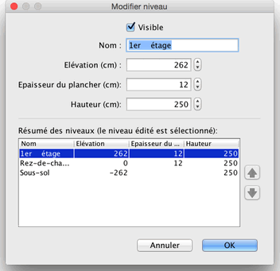

Vous pouvez modifier le nom, l'élévation et les hauteurs d'un niveau en double-cliquant sur sur son onglet, ou en choisissant le menu Plan > Modifier le niveau....
Le panneau de modification d'un niveau vous permet de modifier ces attributs, mais affiche aussi un tableau décrivant tous les niveaux d'un logement, la ligne qui y est sélectionnée correspondant au niveau en cours d'édition.

L'épaisseur du plancher est utilisée pour calculée le bord vertical autour d'un plancher dans la vue 3D. Cette surface est notamment visible autour des trous dans un plancher, et au bord d'une mezzanine ou d'un balcon.
L'élévation
d'un niveau peut être positive ou négative. Dans ce dernier cas, le sol sera automatiquement creusé dans la vue 3D chaque fois qu'un meuble, une pièce ou un ensemble de murs fermé est ajouté à un niveau en sous-sol. Cette fonctionnalité peut être utilisée pour placer une piscine dans le sol ou pour créer une cave d'un ou plusieurs niveaux. |